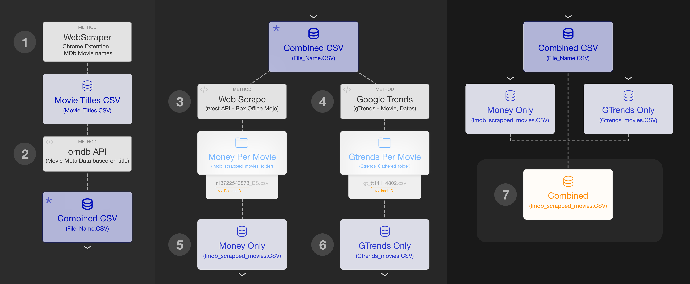

EPPS 6302 Final Project
Below are the resources for the EPPS 6302 Final Project
Project Summary
Our study investigates whether there is a correlation between the decline in Google Trends search interest for movies during the first 21 days post-release and their ratings on IMDb and Rotten Tomatoes. The project combines data from Google Trends, IMDb, and Box Office Mojo to evaluate digital engagement as a predictive measure for movie reception.
Data Collection Flow
Below is an overview of the data collection process:
- Web Scraping:
- Used the
rvestpackage to scrape Box Office Mojo for movie metadata. - Enriched the dataset with additional information from the OMDb API.
- Used the
- Google Trends Data:
- Retrieved search interest data (Day 1 and Day 21) using the
gtrendsRpackage.
- Retrieved search interest data (Day 1 and Day 21) using the
- Data Integration:
- Combined Google Trends, IMDb ratings, and daily earnings data into a unified dataset.
- Analysis:
- Conducted regression analysis in Stata with key variables including search interest drop rate, runtime, box office revenue, and number of votes.
Data Collection Flow Diagram

References
Box Office Mojo. (n.d.). Yearly box office results. https://www.boxofficemojo.com (November 16, 2024).
Cebrián, Eduardo, and Josep Domenech. 2023. “Is Google Trends a Quality Data Source?” Applied Economics Letters 30(6): 811–15. doi:10.1080/13504851.2021.2023088 (November 8, 2024).
Demir, Deniz, Olga Kapralova, and Hongze Lai. 2012. “Predicting IMDB Movie Ratings Using Google Trends.” https://citeseerx.ist.psu.edu/document?repid=rep1&type=pdf&doi=fb53e9605997374f178359d3e1e86008dac6c28a(November 1, 2024).
Fritzsch, Benjamin, Kai Wenger, Philipp Sibbertsen, and Georg Ullmann. 2020. “Can Google Trends Improve Sales Forecasts on a Product Level?” Applied Economics Letters 27(17): 1409–14. doi:10.1080/13504851.2019.1686110(November 8, 2024).
Google. 2024. Google News Initiative: Google Trends.https://newsinitiative.withgoogle.com/resources/trainings/advanced-google-trends/ (November 2, 2024).
Hand, Chris, and Guy Judge. 2012. “Searching for the Picture: Forecasting UK Cinema Admissions Using Google Trends Data.” Applied Economics Letters 19(11): 1051–55. doi:10.1080/13504851.2011.613744 (November 4, 2024).
Jun, Seung-Pyo, Hyoung Sun Yoo, and San Choi. 2018. “Ten Years of Research Change Using Google Trends: From the Perspective of Big Data Utilizations and Applications.” Technological Forecasting and Social Change130: 69–87. doi:10.1016/j.techfore.2017.11.009 (November 4, 2024).
Massicotte, Pierre, and Dirk Eddelbuettel. 2022. gtrendsR: Perform and Display Google Trends Queries. R package version 1.5.1. https://CRAN.R-project.org/package=gtrendsR (December 3, 2024).
OMDb API. (n.d.). The Open Movie Database. https://www.omdbapi.com (November 17, 2024).
OpenAI. 2024. ChatGPT. https://openai.com/chatgpt (November 30, 2024).
Shukla, Anuja, Aditya Yadav, and Shiv Kumar Sharma. 2022. “Predicting Movie Ticket Sales Using Google Trends: Implication of Big Data Analytics.” IUP Journal of Management Research 21(1). https://openurl.ebsco.com/EPDB:gcd:11:23114539/detailv2 (November 4, 2024).
Silva, Emmanuel Sirimal, and Dag Øivind Madsen. 2022. “Google Trends.” In Encyclopedia of Tourism Management and Marketing, ed. Dimitrios Buhalis, 446–47. Edward Elgar Publishing. doi:10.4337/9781800377486.google.trends (November 2, 2024).
Wickham, Hadley, and Davis Vaughan. 2024. tidyr: Tidy Messy Data. R package version 1.3.1. https://CRAN.R-project.org/package=tidyr (December 3, 2024).
Wickham, Hadley, Jim Hester, and Jennifer Bryan. 2024. readr: Read Rectangular Text Data. R package version 2.1.5. https://CRAN.R-project.org/package=readr (December 3, 2024).
Wickham, Hadley. 2024. rvest: Easily Harvest (Scrape) Web Pages. R package version 1.0.4. https://github.com/tidyverse/rvest, https://rvest.tidyverse.org/ (November 5, 2024).
Wooldridge, Jeffrey M. 2013. Introductory Econometrics: A Modern Approach. 5th ed. Mason, OH: South-Western Cengage Learning (November 5, 2024).
Contact Me
If you have any questions about this project, please feel free to contact me at:
Email: oliver.myers@utdallas.edu